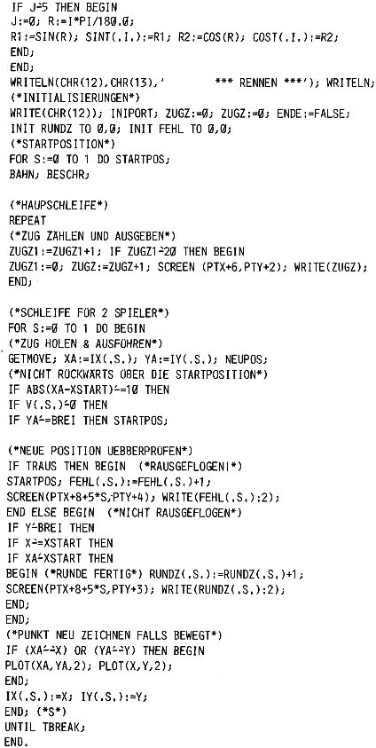

Nascom Journal |
Mai 1982 · Ausgabe 5 |

Günter Böhm
______________ ___.__ _
____ Karlsruhe
____/______
Günter Kreidl
_________ __
____ Straelen
_____/____
Wolfgang Mayer-Gürr
________-___-_____-____.
____________ ___ ___
____ Recklinghausen
_____/_____
Michael Bach
__ __________ __
____ Stegen
_____/_____
Dieter Oberle
________. __
____ Vollmersweiler
_____/____
Peter Deege
__________. __
____ Aachen
Tel.?
Andreas Zippel
____________. __
____ Karlsruhe
____/______
R.Maurer hat einen neuen Befehl für die Sprache BIRNE entwickelt: „MATSCH“ entspricht dem NEW in BASIC, ist aber viel komfortabler, da existierende Programme wirklich unleserlich gemacht werden und eine Regenerierung garantiert unmöglich ist.Die BIRNE-Eproms werden ab sofort mit der Erweiterung MATSCH geliefert, der Bleistift wird dafür aus dem Lieferprogramm gestrichen.
| Seite 23 von 32 |
|---|